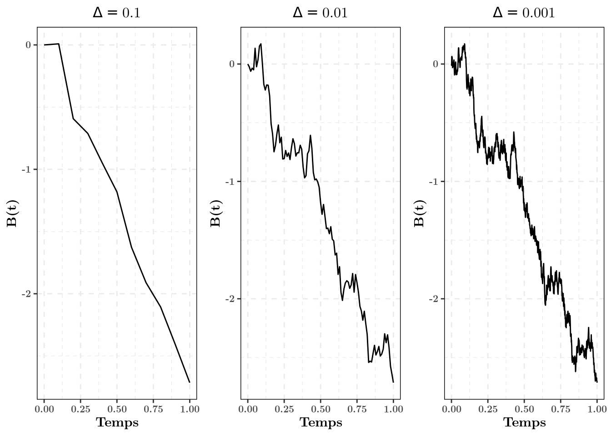
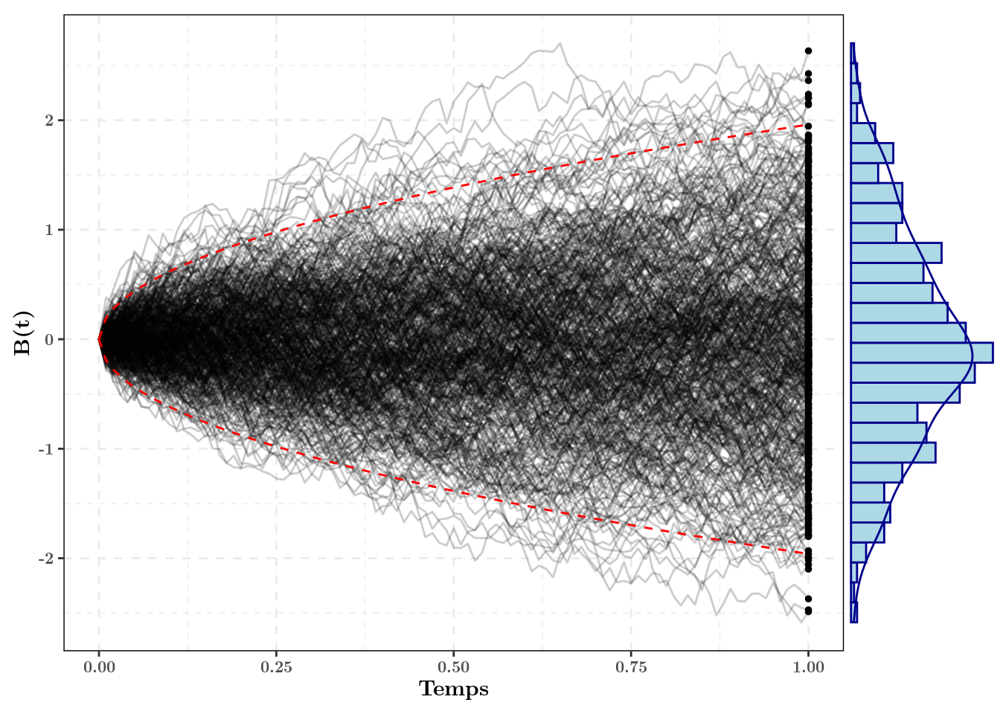

Le mouvement Brownien
Rappel des propriétés du mouvement Brownien
Pour simuler un mouvement Brownien \(\lbrace B(t) \rbrace_{t \geq 0}\), on se rappellera que le mouvement Brownien est un processus de Markov en temps continu tel que:
- Initialisation: B(0) = 0
- Loi de transition: Pour touts temps \(t_2 > t_1\), \(B(t_2) \vert B(t_1) \sim \mathcal{N}(B(t_1), t_2 - t_1)\)
Simulation avec R
library(tidyverse)
# library(ggplot2); library(purrr); library(dplyr)
# are enough if tidyverse doesn't workNous allons maintenant coder en R une fonction qui permet de simuler une trajectoire d’un mouvement Brownien à un vecteur de temps fixés:
simulate_brownian <- function(times){ # Simulation times
n_points <- length(times) # Number of points
brownian <- rep(NA, n_points) # Vector of outputs
brownian[1] <- 0 # Initialization
# Now, we simulate next positions thanks to the Brownian properties
for(t in 2:n_points){
# We use here the definition of the transition law
next_mean <- brownian[t - 1] # Expectation of the transition law
next_variance <- times[t] - times[t - 1] # Variance of the transition law
# Now, we sample from a normal distribution
brownian[t] <- rnorm(1, mean = next_mean, sd = sqrt(next_variance))
}
# Format the output in a data.frame
output <- data.frame(t = times, b_t = brownian)
return(output)
}Ainsi, on peut simuler une première trajectoire d’un Brownien:
my_times <- seq(from = 0, to = 1, length.out = 1001) # Sequence of length 1001,
# starting from 0 and ending at 1
my_first_brownian <- simulate_brownian(times = my_times)On peut la représenter visuellement à différents pas de temps \(\Delta\) (attention, il s’agit de la même trajectoire à différents pas de temps!).

Remarque: En R, on peut simuler un mouvement Brownien de manière bien plus efficace (en termes de temps d’execution) sans faire de boucle de la manière suivante:
simulate_brownian <- function(times){ # Simulation times
n_points <- length(times) # Number of points
# We can simulate all increments at once, and do the cumulative sum
brownian <- c(0, cumsum(rnorm(n_points - 1, 0, sqrt(diff(times))))) # All in once!
# Format the output in a data.frame
output <- data.frame(t = times, b_t = brownian)
return(output)
}Cette écriture, plus synthétique et plus efficace, n’est cependant pas générique, et ne peut pas être appliquée pour la simulation d’équations différentielles stochastiques que nous verrons par la suite. Ainsi, on privilégiera la première écriture.
Loi du mouvement Brownien
En faisant plusieurs simulations, on peut vérifier empiriquement la propriété \(B(t) \sim \mathcal{N}(0, t)\). Sur le graphique suivant, on a effectué 500 simulations, et on regarde la distribution au temps \(t = 1\). On a tracé l’intervalle de confiance théorique à 95%. On voit que la distribution empirique semble s’accorder avec la distribution théorique d’une loi Normale.

De plus, on peut intuitivement valider deux propriétés du mouvement Brownien, chaque trajectoire est:
- Continue (presque sûrement);
- Nulle part dérivable (presque sûrement).